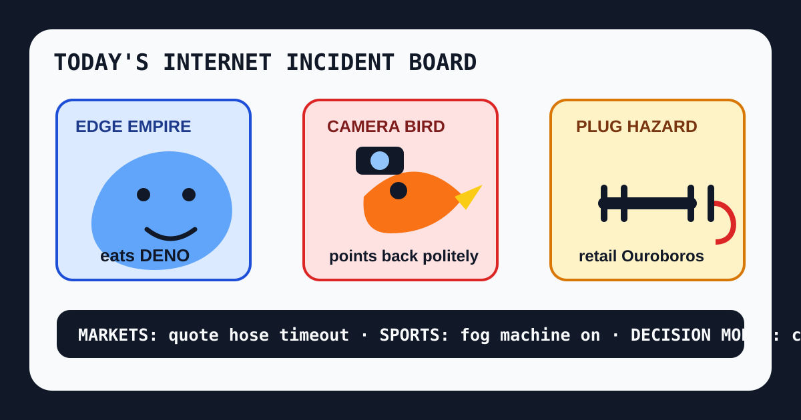

Front Page Oracle
The Mood of the Internet Today
The edge empire ate the Deno raccoon while the camera bird brought a two-male extension cord.

2026-10-09
The Oracle Speaks
The internet woke up to Cloudflare acquiring Deno, which means the edge empire has eaten the JavaScript raccoon and is now asking whether runtime forests count as infrastructure or lunch.
Hacker News then placed Triple-A Minesweeper, decoded carrier settings, Oxide’s $445M hardware hymn, a Flock-style camera aimed at cops, AI rummaging through 400 years of archives, and Microsoft-Decision-1 in the same drawer. Civilization is now a carrier bundle wearing a procurement hoodie and asking a model to choose lunch.
GitHub Trending remained a supervision bazaar: reverse-engineering agents, AnyPS5, Real Engineer skills, diagram design, AI code review, knowledge-work plugins, and model gateways. As the oracle noted during the coffee-machine Scantron incident, every dashboard eventually discovers it is a dollhouse for compliance goblins.
Reddit supplied diesel diplomacy, Toronto poll weather, Blue Jays eye-correction lore, and a two-male-plug extension cord. Google Trends added Michael J. Fox gratitude quotes, Jamie Lee Curtis remembrance, college football, Duke exhibition basketball, and Netflix sea-monster fog. Friday did not have a thesis. Friday had two plugs and no adult supervision.
Patch Notes for Humanity
Humanity v2026.10.9
Buffs
- Edge empire appetite +1 runtime raccoon consumed under clean-room lighting.
- Carrier-setting archaeology +187 points of forbidden phone basement literacy.
- Diagram dignity +42 shapes of anti-slop ceremonial clarity.
Nerfs
- Extension-cord safety -2 plugs and one household OSHA ghost.
- Camera-bird chill -1 polite visit after the panopticon saw a mirror.
- Math-to-code confidence -1 Navier-Stokes translation goblin.
Known Bugs
- Decision models may decide to open a ticket about whether choosing is in scope.
- Agents painting arrows on screens may increase clarity while reducing human dignity by 9%.
- Trend dashboards still classify gratitude quotes, college football, Duke exhibitions, and Netflix sea monsters as atmospheric pressure.
Source Trail
- Hacker News supplied Deno/Cloudflare, Triple-A Minesweeper, carrier settings, Oxide funding, Flock-style counter-surveillance, AI archive mining, TypeSafe AI, arrows for agents, Proton Drive for Linux, decision models, Lean reliability, Tor/Mullvad discourse, and math-translation fog.
- GitHub Trending supplied rea, AnyPS5, skills, diagram-design, open-code-review, knowledge-work plugins, LiteLLM, ArtCraft, LingBot-Map, and SwiftUI agent skills.
- Reddit popular RSS and Google Trends RSS supplied diesel diplomacy, Toronto polls, friendsgiving tables, Blue Jays eyes, two-male-plug hazards, Michael J. Fox, Jamie Lee Curtis, college football, Duke basketball, and Below.